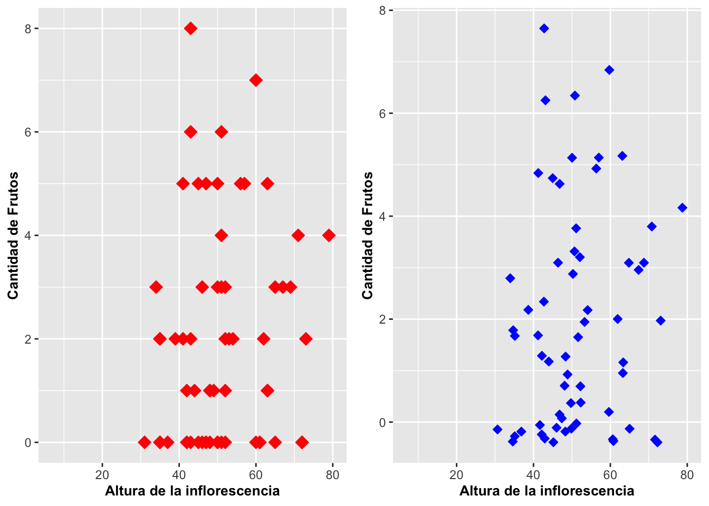
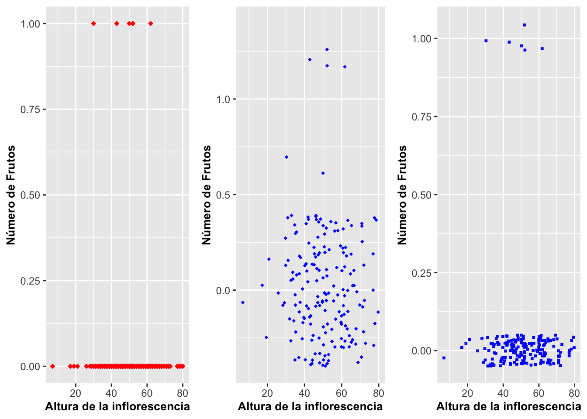

Geom_point_geom_jitter
Fecha de la ultima revisión
## [1] "2020-08-17"library(ggplot2)
library(ggversa)
library(gt)
library(gridExtra)Gráficos de puntos con geom_point
El tipo de gráfico básico de puntos que relaciona dos variables continuas se puede hacer en ggplot2 con geom_point. Es probablemente el gráfico más utilizado. A continuación en el gráfico de la Figura apreciamos la producción básica de este tipo de gráfico combinando a ggplot (el archivo, aes(x, y)) y a geom_point(). Este produce unos puntos negros para demostrar la relación. Se puede cambiar la descripción de los nombres de los ejes labels utilizando labs, al nombrar cada uno de ellos x=Altura de la inflorescencia, y y={Número de Flores.
Para este gráfico se representa la altura de las inflorescencias y la cantidad de flores de una orquídea terrestre de Dipodium roseum. En general, el patrón demuestra que las plantas con inflorescencias más larga tienen más flores.
library(ggplot2)
ggplot(dipodium, aes(Height_Inflo, Number_of_Flowers))+
geom_point()+
labs(x="Altura de la inflorescencia",
y="Número de Flores")+
theme(axis.title=element_text(size=10,face="bold")) *** ## Añadir una tercera variable con color en los puntos
*** ## Añadir una tercera variable con color en los puntos
En el gráfico se sobrepuso información adicional. Ahora el objetivo es visualizar si las inflorescencias más altas y con muchas flores también se pueden relacionar a más frutos. Dos pasos son necesarios. A este nuevo gráfico se le añadió la tercera variable, la cantidad de frutos, con una escala continua. Con el siguiente primer paso,
ggplot(dipodium, aes(Height_Inflo, Number_of_Flowers, color=Number_of_fruits)),
se le añade la variable que se desea salga en color,
color=Number_of_fruits.
Para este gráfico, los colores serán asignados automáticamente. En la Figura podemos ver que van del negro al azul claro. A pesar de que no se seleccionaron esos colores específicamente, en ggplot2 casi todo se puede modificar (incluyendo esos colores) tal como se verá en la próxima sección.
m=ggplot(na.omit(dipodium), aes(Height_Inflo, factor(Number_of_Flowers),
colour=Number_of_fruits))
m+geom_point()+
labs(x="Altura de la inflorescencia",
y="Número de Flores")+
labs(color="Cantidad de\n Frutos")+
theme(axis.title=element_text(size=10,face="bold")) ***
***
Modificar el rango de colores de los puntos
Para especificar el rango de color que uno quiere, por ejemplo de azul a rojo y pasando por amarillo, utilizar la opción y parámetros siguientes:
scale_colour_gradient2(low= {blue}, high= {red},
mid= {yellow},
midpoint=4)
Note que el valor midpoint identifica el valor en el medio del rango para que salga en amarillo. Ahora las plantas que tengan cuatro frutos tendrán asignado el color amarillo. Note que la descripción de la leyenda, Cantidad de Frutos, se hizo usando labs(color={Cantidad de Frutos}). Note además que aparece a la derecha. Más adelante veremos cómo posicionar la leyenda en otra ubicación.
m+geom_point()+
labs(x="Altura de la inflorescencia",
y="Número de Flores")+
scale_colour_gradient2(low="blue",
high="red",
mid="yellow",
midpoint=4)+
labs(color="Cantidad de Frutos")+
theme(axis.title=element_text(size=10,face="bold")) ***
***
Modificar la posición de la leyenda
Para posicionar la leyenda dentro del gráfico, como se muestra en la Figura, se usa la opción
theme(legend.position=c(0,1), legend.justification=c(0,1))
El centro del gráfico tiene las coordinadas de (0.5, 0.5), las que ubicarían la leyenda en el centro mismo. La posición (0,0) es la coordenada izquierda inferior, la (1,1) es la derecha superior, la (0,1) es la izquierda superior, y la (1,0) es la derecha inferior. Para información más detallada sobre la ubicación de la leyenda dentro de un gráfico.
# para incluir la leyenda dentro del gráfico
m+geom_point()+
labs(x="Altura de la inflorescencia",
y="Número de Flores")+
scale_colour_gradient2(low="blue",
high="red",mid="yellow",
midpoint=4)+
labs(color="Cantidad de Frutos")+
theme(legend.position=c(0,1),
legend.justification=c(0,1),
legend.background = element_blank())+
theme(axis.title=element_text(size=10,face="bold"))Geom_point y la mortandad infantil
Visualicemos ahora otro gráfico utilizando datos sobre la mortandad infantil (NMI) y su relación con la mortandad maternal (NMP) durante el parto. En el ejemplo de la Figura se observa esta relación. A continuación le añadimos una columna que identifica en qué continente se encuentra el país. Seleccionamos solamente dos grupos geográficos identificados como América=AM y Unión Europea=EU. Las variables fueron transformadas con la función logarítmica {log}. Para seleccionar solamente las dos regiones geográficas, se usó la función de {subset}. La barra {|} quiere decir que se seleccionaron solamente las filas que cumplen con las dos condiciones; en nuestro caso, los países de América y de la Unión Europea. Eso se demuestra a continuación:
# log(1)
Parto=PartosInfantes
Parto$logNMI=log(Parto$NMI+1)
Parto$logNMP=log(Parto$NMP+1)
Parto$logGSPC=log(Parto$GSPC+1)
Parto$sumaalgo=Parto$NMI+Parto$NMP*sqrt(Parto$GSPC)^2
Partosub=subset(Parto, Grupo=="AM"|Grupo=="EU"|Grupo=="AF")
gt(head(Partosub))| NMI | NMP | GSPC | Grupo | Pais | logNMI | logNMP | logGSPC | sumaalgo |
|---|---|---|---|---|---|---|---|---|
| 8723 | 400 | 605.1878 | AM | Argentina | 9.073833 | 5.9939614 | 6.407190 | 250798.1379 |
| 60 | 5 | 1720.1595 | AM | Bahamas | 4.110874 | 1.7917595 | 7.450753 | 8660.7973 |
| 42 | 1 | 1146.0417 | AM | Barbados | 3.761200 | 0.6931472 | 7.044941 | 1188.0417 |
| 121 | 2 | 278.5792 | AM | Belize | 4.804021 | 1.0986123 | 5.633286 | 678.1584 |
| 7756 | 540 | 208.7842 | AM | Bolivia | 8.956351 | 6.2934193 | 5.346079 | 120499.4649 |
| 45682 | 1400 | 947.4277 | AM | Brazil | 10.729482 | 7.2449415 | 6.854806 | 1372080.7744 |
Ahora veamos el resultado en la Figura a continuación.
ggplot(Partosub, aes(logNMP, log(NMI+1), colour=Grupo))+
geom_point()+
xlab("Mortandad durante el parto (log)")+
ylab("Mortandad infantil (log)")+
theme(axis.title=element_text(size=10,face="bold"))
Opciones y Parametros de geom_point
ggplot(el archivo de datos, aes(la variable discreta))
geom_jitter(alpha, color, fill, shape, size)
alpha: la intensidad del color
color: el color de la línea alrededor de las barras
fill: el color de las barras
linetype: representa el estilo de línea
size: representa el grosor de la línea
weight: para modificar el valor original; entonces no sería, por ejemplo, el conteo/suma de los valores si no un valor ponderado (promedio ponderado)
Gráfico de puntos con jitter y con geom_jitter
Con frecuencia hacemos representaciones gráficas en que aparecen muchos datos que se solapan unos sobre otros, lo que no permite visualizar y apreciar la cantidad de datos que se están representando. Podemos mejorar la representación con la opción geom_jitter. Esta forma de graficar es muy similar al gráfico de puntos y sumamente efectiva cuando tenemos demasiados datos aglomerados. La diferencia más importante es que los datos no están exactamente en las coordenadas tal como se especifica en los datos de la tabla o archivo CSV; más bien están levemente desplazados.
En el siguiente ejemplo, se usan los mismos datos de la orquídea Dipodium para la generación de los dos gráficos: una con geom_point y la otra con geom_jitter. En el gráfico de la Figura (a), los puntos están posicionados exactamente de acuerdo a los valores como aparece en la hoja de cálculo. A consecuencia de eso, los datos iguales estarán completamente solapados. Por otro lado, en el gráfico de jitter en la Figura (b), los valores se han desplazado un poco. En este último caso, ya que los datos no están completamente solapados, eso ayuda a visualizar mejor la cantidad de datos del análisis.
a=ggplot(dipodium, aes(Height_Inflo, Number_of_fruits))+
geom_point(size=3,shape=23,fill="red", color="red")+
labs(x="Altura de la inflorescencia", y="Cantidad de Frutos")+
theme(axis.title=element_text(size=10,face="bold"))
b= ggplot(dipodium, aes(Height_Inflo, Number_of_fruits))+
geom_jitter(size=2,shape=23,fill="blue", color="blue")+
labs(x="Altura de la inflorescencia", y="Cantidad de Frutos")+
theme(axis.title=element_text(size=10,face="bold"))
grid.arrange(a,b,ncol=2)
Veamos un ejemplo más contundente de la utilidad de geom_jitter. En el próximo ejemplo a continuación, Figura (a), el gráfico nuevamente tiene los datos posicionados exactamente en las coordenadas como aparece en el archivo de datos. La variables son la altura de la inflorescencia y el valor de presencia o ausencia de frutos. Por ende, en el eje de Y hay solamente dos valores: 0 = sin frutos, o 1 = con frutos, y eso es sin importar la frecuencia de los eventos; en otras palabras, solo indica sí o no. En el segundo gráfico, Figura (b), la opción de geom_jitter es aplicada y uno puede apreciar mejor la cantidad de datos en el archivo dado el grado de dispersión.
Se podría argumentar que de hecho la dispersión de los datos es exagerada y no está suficientemente concentrada alrededor de los valores originales de 0 y 1. En tal caso, para reducir la dispersión alrededor de las categorías, en la Figura (c) se le asigna la cantidad de dispersión usando geom_jitter(width = x.xx, height = x.xx); width es para controlar el jitter (o dispersión) en el eje de X, y height es para controlarla en el eje de Y. En el tercer gráfico, Figura (c), se redujo la dispersión de 0.5 a 0.10, lo que hace que los puntos estén dispersados entre los valores de -0.10 a 0.10 dentro de las categorías 0 y 1 en el eje de Y. Tengamos en cuenta que la dispersión de {jitter} por omisión es de 40% de la resolución hacia lo ancho width y hacia lo alto height. Entonces, eso quiere decir que jitter usará 80% del espacio del compartimento, o bin; o sea, el espacio que le toca dentro del gráfico. Esto se aprecia mejor en el gráfico de la Figura (b), donde se ve que los datos están demasiado dispersos entre -0.5 y 0.5 alrededor del cero. Pero sin duda este gráfico permite apreciar mucho mejor la cantidad de datos que contiene.
a=ggplot(dipodium, aes(Height_Inflo, Frutos_si_o_no))+
geom_point(size=1,shape=23,
fill="red", color="red")+
labs(x="Altura de la inflorescencia",
y="Número de Frutos")+
theme(axis.title=element_text(size=10,face="bold"))
b= ggplot(dipodium, aes(Height_Inflo, Frutos_si_o_no))+
geom_jitter(size=0.5,shape=23,
fill="blue", color="blue")+
labs(x="Altura de la inflorescencia",
y="Número de Frutos")+
theme(axis.title=element_text(size=10,face="bold"))
c= ggplot(dipodium, aes(Height_Inflo, Frutos_si_o_no))+
geom_jitter(height =0.05,size=.5,shape=7,
fill="white", color="blue", stroke=.5)+
labs(x="Altura de la inflorescencia",
y="Número de Frutos")+
theme(axis.title=element_text(size=10,face="bold"))
grid.arrange(a,b,c,ncol=3)
Opciones y Parametros de geom_jitter
ggplot(el archivo de datos, aes(la variable discreta))
geom_jitter(alpha, color, fill, shape, size)
alpha: la intensidad del color
color: el color de la línea alrededor de las barras
fill: el color de las barras
linetype: representa el estilo de línea
size: representa el grosor de la línea
weight: para modificar el valor original; entonces no sería, por ejemplo, el conteo/suma de los valores si no un valor ponderado (promedio ponderado)